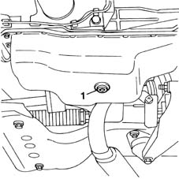
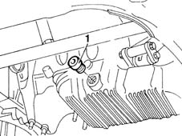

1020A30 engine oil drain plug - replace
- Path
- Procedures > 10 ENGINE UNIT > 1020 CRANKCASE SUMP AND COVERS > 1020A crank case oil sump > 1020A30 engine oil drain plug - replace
- Kind
- repair procedure (removal / refitting; the operation number is the code)
- Applies to
- all engines; all production periods
- Interactive page
- https://sloeber94.github.io/elrnDB-fMltpl/en/#/2891201
Applies to: engines: 1.6 16v; all production periods
 Removing
Removing
 Refitting
RefittingPlace the car on a ramp.
Raise the car.
Place a container under the vehicle to collect the engine oil.
1. Undo the engine oil drain plug on the oil sump and drain the oil.

Applies to: engines: 1.6 16v; all production periods
Refitting
RemovingClean and tighten the oil cap. Replace the cap seal.
Tighten the oil cap on the sump to the specified torque.
 | Fastening | Component | Ø | Value (daNm) |
|---|---|---|---|---|
- | Plug | ENGINE OIL DRAIN PLUG | M22 | 5 |
Lower the lift.
Refill the engine lubrication circuit using the recommended oil.
1084A10 ENGINE OIL - Check level and top up, if necessary
Remove the vehicle from the lift.
Applies to: engines: 1.9 JTD 8V; all production periods
Removing
RefittingPlace a container beneath the oil sump to collect the engine oil.
1. Unscrew the engine drain plug from its seat on the sump and remove.

Applies to: engines: 1.9 JTD 8V; all production periods
Refitting
RemovingTighten the new sump plug to torque.
| Fastening | Component | Ø | Value (daNm) |
|---|---|---|---|---|
- | Bolt | ENGINE OIL DRAIN PLUG | M18 x 1.5 | 2 |